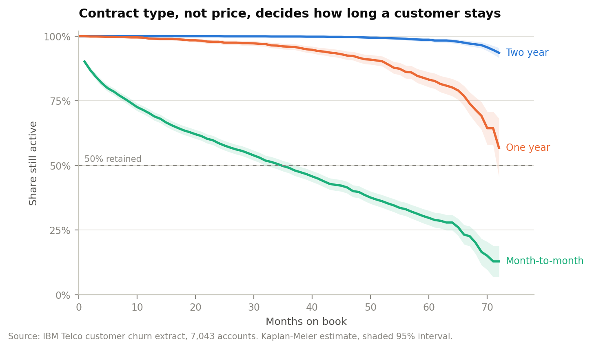
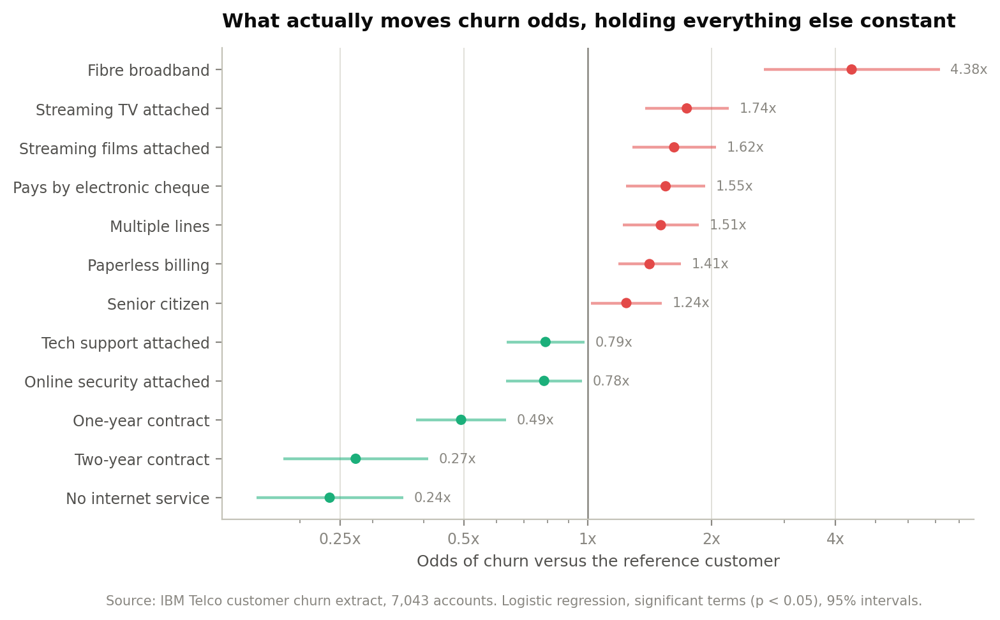
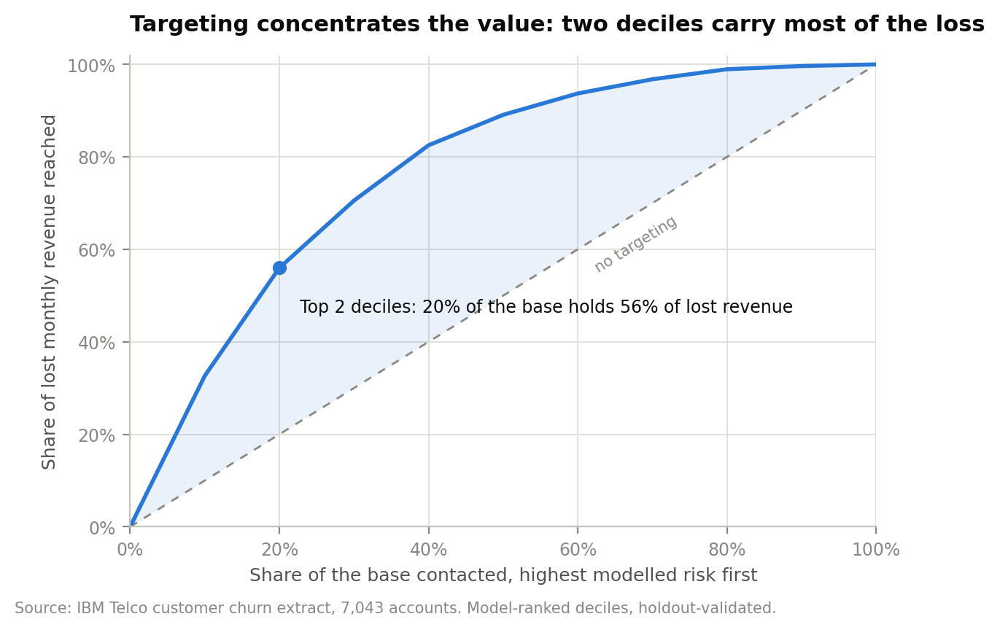

Subscription economics · Telecommunications
A 7,043-account telecom book, read for what churn is costing, which accounts carry the loss, and what a retention programme has to achieve before it pays for itself.
The book carries $456,117 of monthly recurring revenue. In the observation month 1,869 accounts closed — 26.5% of customers, but 30.5% of revenue. Leavers were billing $74.44 a month against $61.27 for the accounts that stayed.
That gap is the finding that should change how the programme is funded. Churn here is not a low-value-customer problem, and treating it as one has been costing the higher-margin end of the book.
Month-to-month accounts churn at 42.7%, one-year at 11.3%, two-year at 2.8%. Median tenure on month-to-month is 35 months; neither annual contract reaches 50% attrition inside six years. Log-rank χ² = 2,353 across the three curves.
Once contract type and product mix are held constant, each additional dollar on the monthly bill is associated with slightly lower churn odds — the opposite of where the commercial conversation usually starts.

Holding contract, tenure, bill size and every attached service constant, a fibre line carries 4.38x the churn odds of the reference customer (95% CI 2.68–7.17). It is the largest effect in the model by a wide margin, and month-to-month fibre is 30% of the base but 72% of all lost revenue.
Attached support products pull the other way. Online security (0.78x) and tech support (0.79x) both reduce churn odds significantly, which makes attachment a retention lever and not only an ARPU lever.

The scoring model reaches AUC 0.836 on a 30% holdout. Its top decile churns at 76.6% — 2.89x the base rate — and the top two deciles hold 56% of the lost revenue while covering 20% of customers.
That precision is what makes an intervention viable, because the offer cost is paid on everyone contacted while the benefit only lands on the people who would otherwise have left. Even in the top two deciles, 457 of 1,409 contacts were staying anyway.
| Offer | Cost | Benefit | Net value | Return |
|---|---|---|---|---|
| 10% | $155,222 | $275,432 | $120,210 | 1.77x |
| 15% | $224,379 | $275,432 | $51,053 | 1.23x |
| 20% | $293,537 | $275,432 | −$18,104 | 0.94x |
Recommendation
Contact the top two modelled risk deciles — 1,409 accounts — with a 10% bill reduction held for twelve months, conditional on moving off month-to-month. $120,210 of net contribution against $155,222 of spend, and it stays positive down to a 9.5% save rate.
Do not extend the discount past 10% to buy acceptance. Raising it inflates the cost across all 1,409 contacts while the addressable saves stay fixed at 952. A 20% offer is loss-making. If budget is tight, cut depth rather than generosity — the top decile alone returns 2.02x.

Save rates are modelled, not observed — the extract has no campaign history — which is why the case is anchored on the break-even rather than the assumption. Contribution margin and cost of capital are supplied from outside the data and swept; the recommendation holds anywhere above a 50% margin. Nothing here is causal: the first recommendation is to run a controlled test.